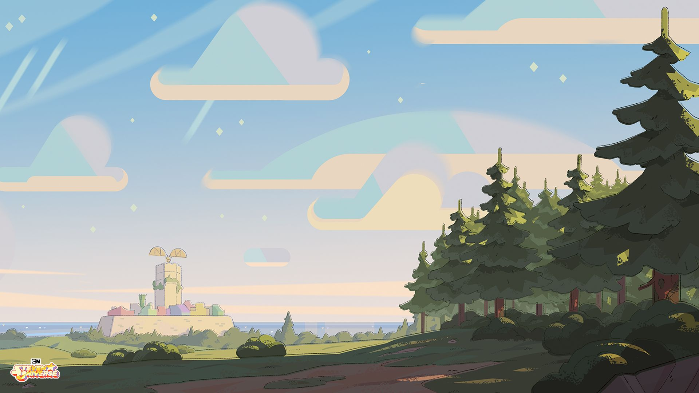

1 / 5

El derecho de soñar
El derecho de soñar
"Sin embargo, aunque no podemos adivinar el mundo que será, bien podemos
imaginar el que queremos que sea. El derecho de soñar no figura entre los
treinta derechos humanos que las Naciones Unidas proclamaron a fines de
1948. Pero si no fuera por él, y por las aguas que da de beber, los demás
derechos se morirían de sed."
Eduardo Galeano
2 / 5
Origen desconocido
Origen desconocido
"La educación es algo admirable, pero es bueno recordar de cuando en cuando
que nada de lo que merece la pena saber puede ser enseñado."
Oscar Wilde
3 / 5

El libro de los abrazos
El libro de los abrazos
"Cuando es verdadera, cuando nace de la necesidad de decir, a la voz humana
no hay quien la pare. Si le niegan la boca, ella habla por las manos, o por los
ojos, o por los poros, o por donde sea."
Eduardo Galeano
4 / 5
Origen desconocido
Origen desconocido
"Nunca pensé que en la felicidad hubiera tanta tristeza."
Mario Benedetti
5 / 5

El alquimista
El alquimista
"Las cosas simples son las más extraordinarias y sólo los sabios consiguen
verlas."
Paulo Coelho